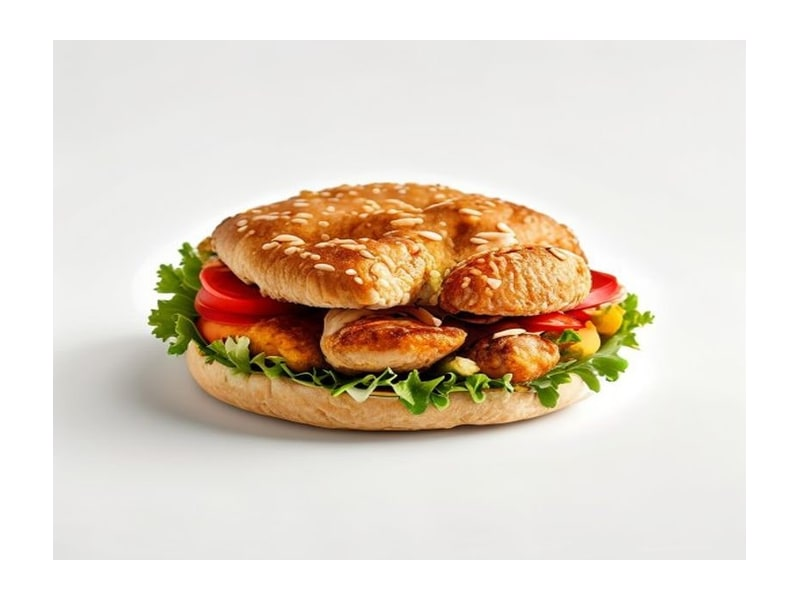

Fast food
Curry kurczak
Curry kurczak: 11 g białka, 140 kcal, 10 g węglowodanów i 7 g tłuszczu na 100 g. Kategoria: Fast food.
Kalorie140 kcalna 100 g
Białko / proteiny11 g
Węglowodany10 g
Tłuszcz7 g
Cena (szac.)~3,76 złza 100 g
Ceny zaktualizowano: maj 2026 (szacunek — ceny w popularnych supermarketach)
Porcja: porcja (300g)
| Kalorie | 420 kcal |
|---|---|
| Białko | 33 g |
| Węglowodany | 30 g |
| Tłuszcz | 21 g |
| Cena (szac.) | ~11,29 zł |
Szczegółowe składniki odżywcze na 100 g
| Wartość energetyczna (kalorie) | 140 kcal |
|---|---|
| Białko (proteiny) | 11 g |
| Węglowodany | 10 g |
| Tłuszcz | 7 g |
| Tłuszcze nasycone | 3 g |
| Tłuszcze nienasycone | 4 g |
| Witaminy i minerały | Sód, Żelazo, Witamina B1 |
| Współczynnik kcal / 1 g białka | 12.7 |
| Cena produktu (szac. za 100 g) | ~3,76 zł |
| Cena za 100 g białka (szac.) | ~34,21 zł |